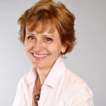
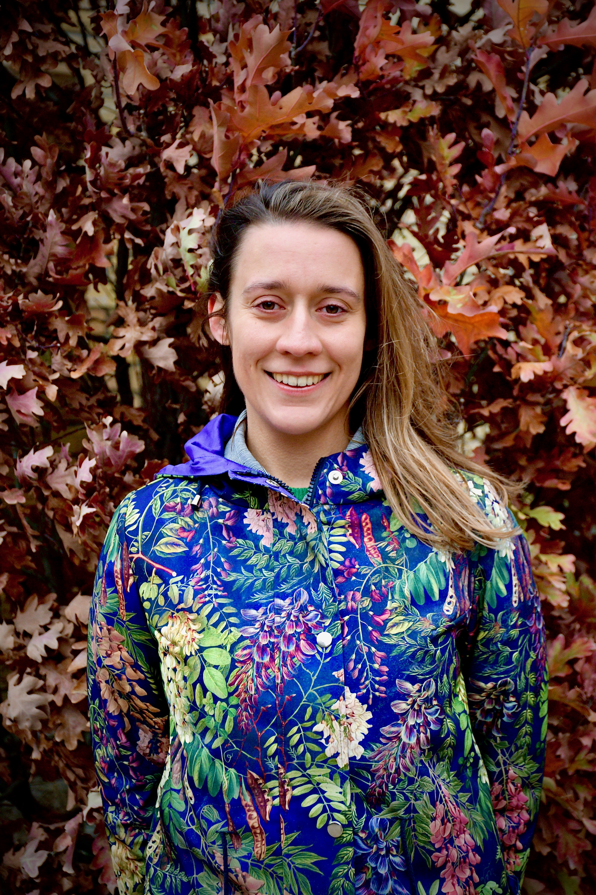

Faculty
Tamara Trojanowska
Agnieszka Jeżyk
Aleksandra Swiecka
|  | Tamara TrojanowskaAssociate Professor, Polish 121 St. Joseph Street, Room 423 Office hours: On Secondment |
| Biography: A graduate of the Drama Centre at the University of Toronto (PhD) and of Theatre Studies at the Jagiellonian University in Kraków (MA), Tamara Trojanowska has also formerly held an Oxford University scholarship and an internship at the Royal Dramatic Theatre in Stockholm. She has taught at universities in Poland, Canada, and the United States, returning to University of Toronto as a faculty member in 1998. Since then, she has directed the Polish Language and Literature Program at the Slavic Department, strengthening in strides its profile and presence in North America , as well as the University College Drama Program (2008-2012). In 2012, together with Stephen Johnson, then director of the Graduate Drama Centre, she integrated the two units to form the Center for Drama, Theatre and Performance Studies, with which she is cross-appointed. She now serves as Director of the Centre. Her current research focuses on the intersections of drama and theatre with history and religious thought, and emphasizes issues of identity, subversion, and transgression, topics that she has published on in Poland, Canada, United States, and England. Her latest research project, co-edited with Joanna Niżyńska and Przemysław Czapliński and entitled A History of Polish Literature and Culture: New Perspectives on 20th and 21st Centuries, counts over 1350 pages and presents more than sixty essays by diverse authors from all over the world, including her extensive analysis of the transgressive practices in Polish drama and theatre ( “Delectatio furiosa, or the modes of cultural transgression”). She has also contributed a paper on this subject to the upcoming The Theatre of Tadeusz Kantor (eds. Magda Romanska and Cathleen Cioffi), with her investigations of the dramatic and the sacred resulting in a new selection of, and an extensive introduction to, the plays of Roman Brandstaetter (2016). Alongside her continuing administrative and research work, Trojanowska has served for five years as an elected member on the Executive Committee of the Division of Slavic and East European Literatures in Modern Languages Association and is an elected Board Member of the Polish Institute of Arts and Science in America. She also sits on the Advisory Boards of a number of professional journals, including Didaskalia (Jagiellonian University, Kraków), Polish Theatre Perspective (UK), Postscriptum (Silesian University, Poland), The Sarmatian Review (Rice University), and Teksty Drugie (Kraków). Research Interests: Polish culture and literature of the 20th and 21st centuries; culture and history; discourses of identity; theories of drama, theatre and performance. Education: Ph.D., University of Toronto, 1994 |
|
|  | Magdalena CabajAssistant Professor, Polish 121 St. Joseph Street, Room 423 Click for: Office Hours |
| Biography: Magdalena Cabaj is an Assistant Professor, Teaching Stream of Polish Language, Literature, and Culture in the Department of Slavic Languages & Literatures. She completed her joint PhD in Philosophy at École Normale Supérieure — Paris Sciences & Lettres, and in Literature at the University of Warsaw. Before joining the University of Toronto, Magdalena was a Kościuszko Foundation Fellow at the Department of Slavic and East European Languages and Cultures at Indiana University in Bloomington, and a researcher at the University of Warsaw. Research Interests: Her areas of interest include Polish studies from a comparative perspective, teaching Polish in a broad cultural context, relationships between contemporary philosophy and art, bioethics and medical humanism in literature, posthuman studies, and women, gender, and intersex studies. Education: | |